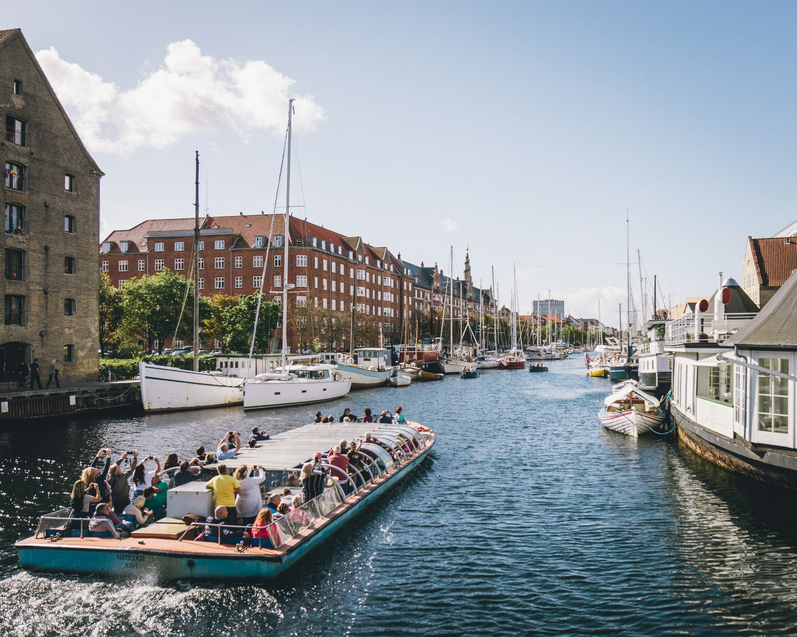
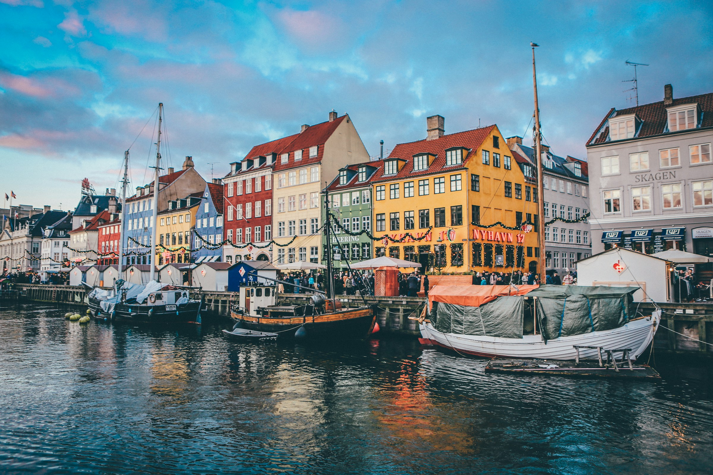
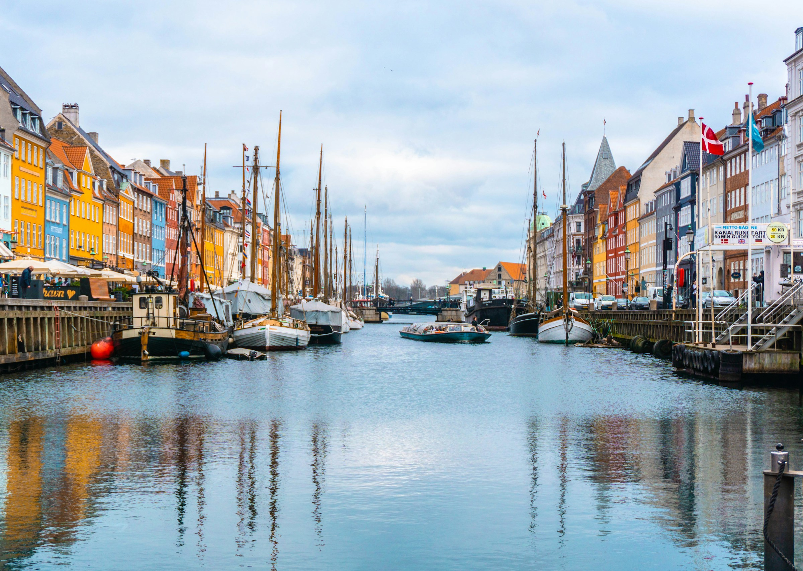
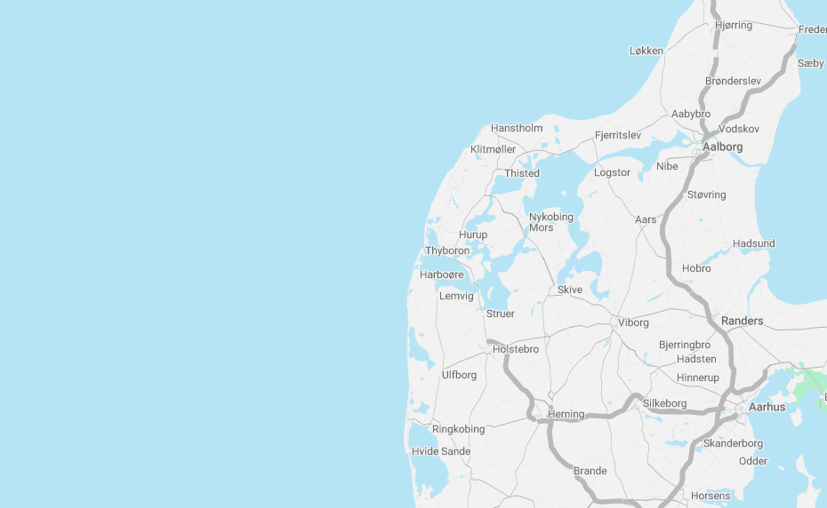

Visit the Offshore Wind Farm

Experience the Power of the Wind
Once operational, the Offshore Wind Farm will open its doors to the public—inviting you to step behind the scenes of one of the most exciting renewable energy projects in the world.
Our guided visitor tours offer a rare opportunity to see cutting-edge offshore wind technology in action.
Learn how clean electricity is generated, explore the engineering behind the turbines, and discover the environmental benefits of offshore energy.
What to Expect on the Tour:
- Guided boat trip to the wind farm location
- Up-close view of turbines in operation
- Insightful presentations on wind energy technology
- Live Q&A with our engineers and project team
- Safety gear and briefings provided
Tours last approximately 3 hours and depart from Thyboron Havn.
Book Your Tour

Standard Tour
Monday 1st June 2026
10:00 - 16:00

Premium Tour
Friday 4th June 2026
10:00 - 16:00
Important locations
Start of the visitor tours: Thyboron
Location of the offshore wind farm: 30 km off the West coast
